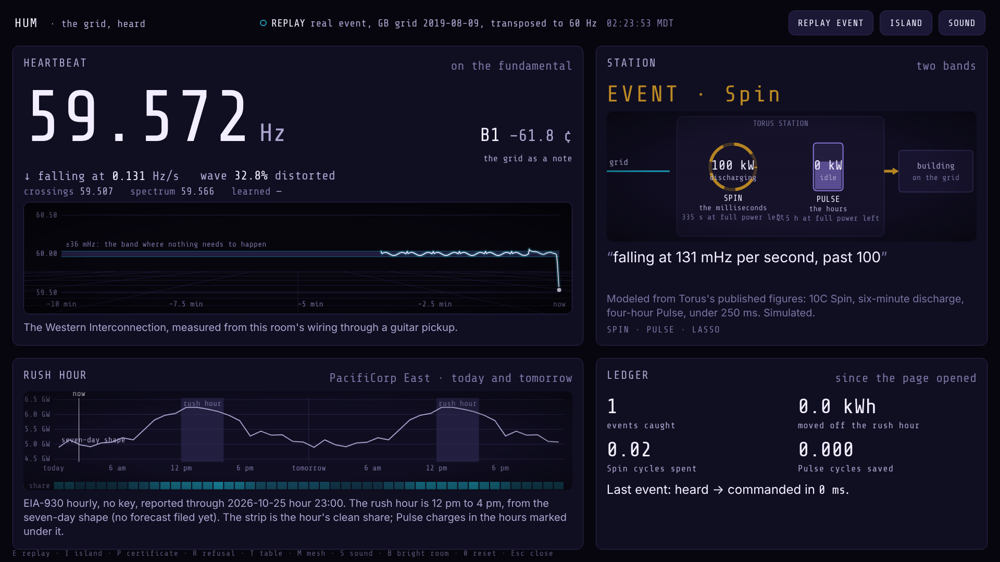
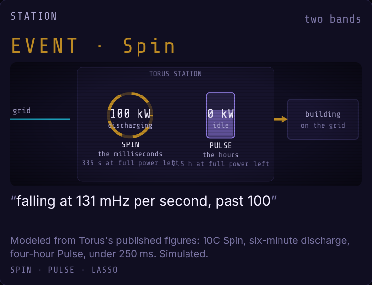
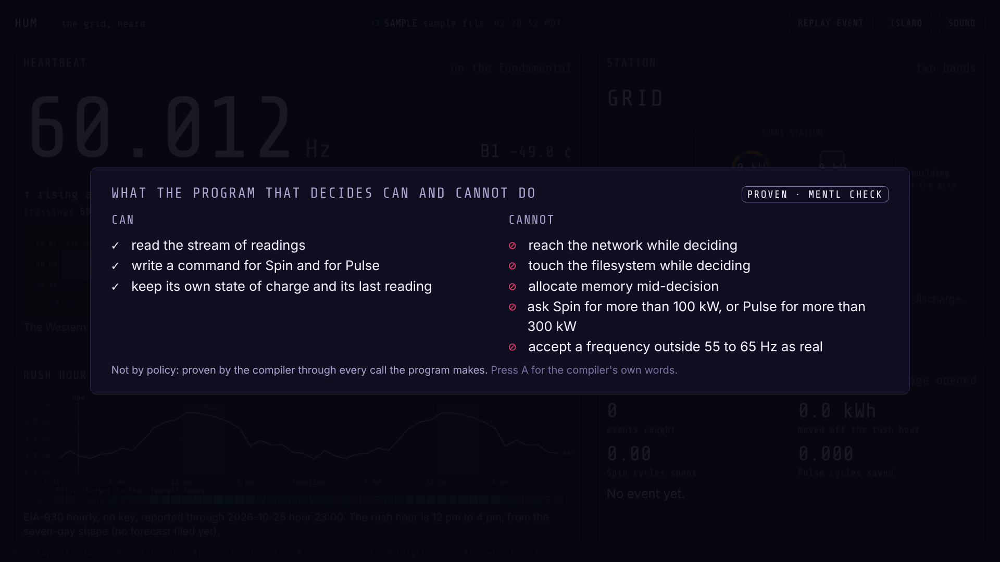
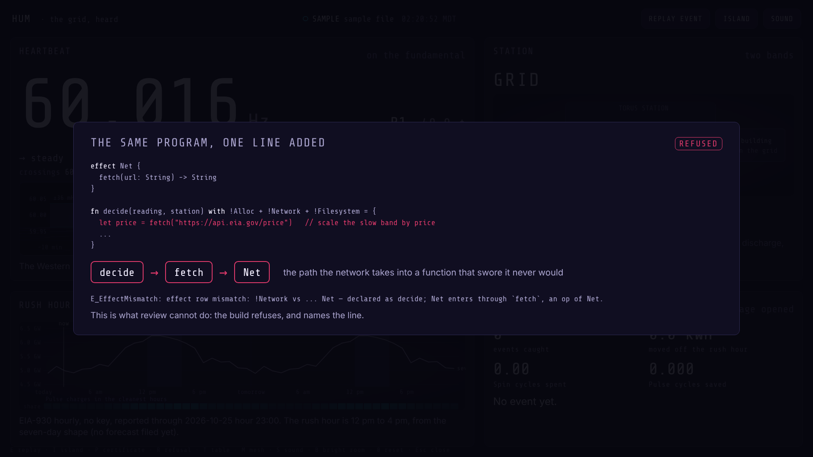
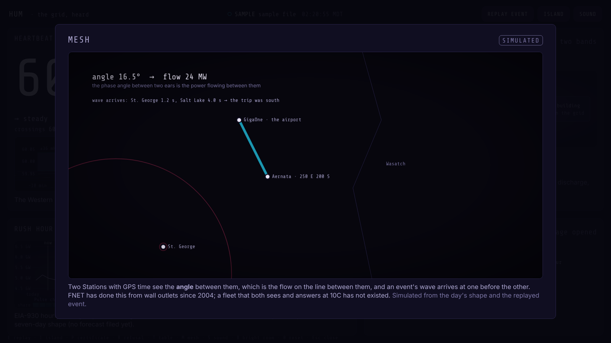

HUMthe grid, heard
The grid broadcasts its state sixty times a second, through the wire in the wall.
This is what it sounds like, and what a Torus Station should do about it.
The eara guitar pickup, a cable, a room

A pickup is a coil. Every wire in this room hums at sixty.
The hum's pitch is not the room's. It belongs to the whole Western Interconnection, Alberta to Baja. It sags when the grid is short.
Read to the millihertz, three independent ways that agree.
The same code runs on a thirty-dollar chip inside a guitar pedal.
Two bandsa Station answers at two speeds

Spin takes the milliseconds. A plant trips, the frequency falls, Spin answers within a third of a second.
Pulse takes the hours. The rush hour is on the page before it arrives; Pulse carries the building through it.
When the hum dies, the Station carries the building. The same ear knows first. Two-way, as you said.
Modeled from Torus's published figures: 10C, a six-minute discharge, four hours, under 250 ms. Simulated, and labeled so on every screen.
The program that decidesproven, not reviewed


It cannot reach the network while deciding, and the compiler proves it through every call. Every decision says why. The layer under Lasso.
What $5,000 doesa second ear and a GPS clock
The angle between two Salt Lake sites is the flow between them. One ear here, one at GigaOne, and the mesh sees the line, not just the frequency.
I bring that measurement to Torus engineering.
The code
github.com/ampactor-labs/sonido
demos/grid-rush-hour
The program
github.com/ampactor-labs/mentl
examples/grid
The page
ampactor.dev/hum
runs from a recorded session, on a phone
What Torus has, and what this adds
| Torus today, from its own pages | HUM |
|---|---|
| The Station monitors every cycle on three phases and corrects voltage in milliseconds (UL 1741 SB, IEEE 1547). | A room hears what the Station hears, from a guitar. Three estimators to the millihertz. Not a better sensor: a shared one. |
| Lasso forecasts, dispatches and learns, and reacts in milliseconds. | The program beneath a dispatcher: its negative capabilities proven, each decision explained in words. |
| Shield: a dedicated appliance, zero internet-facing attack surface. Overwatch: sub-second telemetry across the fleet. | A proof about the program itself, under the perimeter: it cannot reach the network while deciding, whatever the network does. |
| Each Station answers frequency and voltage where it stands. | A suggestion with precedent: two ears with GPS time see the angle, which is the flow. FNET has done it from outlets since 2004. |
Methods and calibration
Crossings
Three bandpasses on the hum's harmonics, the loudest tracked. The period between rising zero crossings, interpolated, kept as a sample count plus a fraction so precision never decays. 100 ms and 1 s readings; the rate of fall over 300 ms.
Spectrum
A two-second Hann window, zero-padded, the peak interpolated with a parabola on log magnitude. THD from the harmonics. The cross-check.
Learned
A one-coefficient predictor, x[n] = a·x[n−1] − x[n−2], its coefficient learned by a gradient the compiler derives from the chain itself. The third witness.
Measured on a synthesized hum with noise at −30 dB: the one-second reading within 0.5 mHz, the spectral reading within 0.2 mHz, the rate of change under 0.023 Hz/s at rest, a trip at 0.20 Hz/s detected 250 ms after it starts. The interface's clock offset is read from the hum's long-run mean and printed on the page.
The mesh

Latency and sources
Hum → ear: a line every 50 ms, the rate of fall over the last 300 ms → the director adds the hour, the rush window and the clean share → the controller answers on the same line → the page draws it a quarter second later. A trip at 0.20 Hz/s crosses the trigger 250 ms after it starts.
- EIA-930 hourly, PacifiCorp East: demand, day-ahead forecast, fuel mix. No key.
- NESO open data, one-second system frequency, 9 August 2019, the Hornsea and Little Barford trips, transposed to 60 Hz per unit.
- Torus's published figures for Spin and Pulse, from torus.co.
- FNET/GridEye, University of Tennessee, for the mesh's precedent.